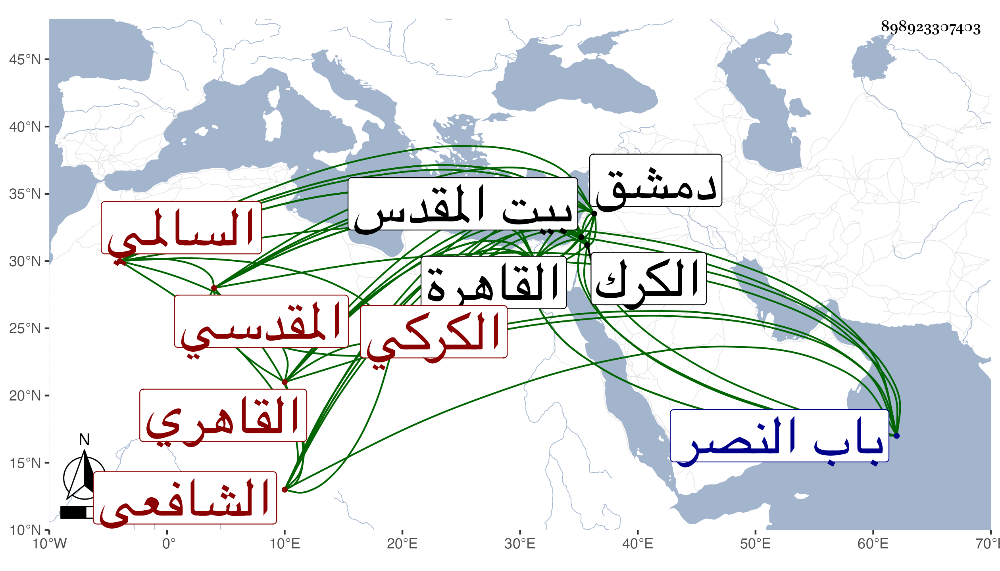

0902Sakhawi.DawLamic.ITO20230111-ara1.EIS1600.898923307403
Biography ID: 898923307403
757
محمد بن محمد بن محمد بن محمد بن مسلم كمحمد بن علي بن أبي الجود التاج بن الأمير ناصر الدين السالمي القاهري ثم الكركي المقدسي الشافعي سبط العماد أحمد بن عيسى كركي القاضي الآتي أبوه ويعرف بابن الغرابيلي . ولد سنة ست وتسعين وسبعمائة بالقاهرة حيث كان جده العماد حاكما فيها ونقله أبوه إلى الكرك حين ولي إمرتها فنشأ به ثم تحول به إلى القدس سنة سبع وعشرين بل قبلها فاشتغل وحفظ القرآن وعدة مختصرات كالإلمام وألفية الحديث والمختصر الأصلي والكافية لابن الحاجب ولازم عمر البلخي في العضد والمعاني والمنطق وكذا لازم نظام الدين قاضي العسكر والشمس بن الديري حتى مهر في الفنون إلا الشعر ثم أقبل من سنة خمس وعشرين فيما قيل على طلب الحديث بكليته فسمع الكثير ببلده وقيد الوفيات ونظر في التواريخ والعلل وعرف العالي والنازل والأسماء والإسناد وبرع في ذلك جدا . وصنف التصانيف الحسنة كمؤلف في الحمام جمع فيه بين المعقول والمنقول أبان فيه عن فضل كبير ونظر واسع ذكر فيه ما ورد في الحمام من الأخبار والآثار مع أقوال العلماء في دخوله وما يتعلق بالعورة واستعمال المال فيه والاستياك والوضوء والغسل وقدر المكث فيه وحكم الصلاة فيه وأفضل الحمامات وأحسنها وما يتصل بذلك من الطب وحكم أجرة الحمام وغير ذلك وهو نهاية في الجودة بل شرع في شرح على الإلمام وله تعاليق وفوائد وخرج لشيخنا القبابي جزءا من روايته . ورحل إلى دمشق ثم إلى القاهرة فلازم شيخنا وحرر معه المشتبه من تصانيفه غاية التحرير واستمر ملازما له حتى مات في يوم السبت ثالث عشر جمادى الثانية سنة خمس وثلاثين وصلي عليه شيخنا ودفن في تربة سعيد السعداء وكانت جنازته مشهودة حضرها ابن الديري والمحب بن نصر الله والمقريزي وسألوا له التثبت وعظم الأسف على فقده . وقد ذكره شيخنا في إنبائه وقال أنه كان هم بالحج صحبة ابن المرأة يعني رجبيا فلم يتهيأ له ذلك ووعك حتى مات ، زاد غيره بحيث كان خروج جنازته مع خروج الحج من باب النصر ، قال شيخنا وكان قد اغتبط به الطلبة لدماثة خلقه وحسن وجهه وفعله وأنه كان من الكملة فصاحة لسان وجرأة ومعرفة بالأمور وقياما مع أصحابه ومروءة وتوددا وشرف نفس وقناعة باليسير وإظهارا للغنى مع قلة الشيء وأنه عرض عليه الكثير من الوظائف الجلية فامتنع واكتفى بما كان يحصل له من شيء كان لأبيه ، قال وكان الأكابر يتمنون رؤيته والاجتماع به لما يبلغهم من جميل أوصافه فيمتنع إلا أن يكون الكبير من أهل العلم . وقال في معجمه نحوه باختصار ووصفه في الموضعين بالحفظ وممن أخذ عنه العز السنباطي وكان يحكي لنا من فصاحته ووفور ذكائه وإقدامه وقوة جنانه وشرف نفسه ومروءته وتودده إلى أحبابه وقيامه معهم ومعرفته بالأمور وقناعته عجائب بل حكى لي أنه كان يميز جماعة شيخنا بالوصف الذي وصفوا به له في بلده قبل معرفته بهم . وكذا أخذ عنه ابن قمر والبقاعي وآخرون، ومن شيوخه الذين سمع منهم الهروي وابن الجزري والقبابي والعز القدسي وامتنع حين كان بالقاهرة من الاجتماع بالعلم البلقيني محبة في شيخنا وعين بعضهم مما عرض عليه إعادة الصلاحية قال وبالجملة فلم يل وظيفة قط جليلة ولا حقيرة بل كان يتقنع من رزقة تلقاها عن أبيه وأوصى البرماوي أن يراجع في تبييض تصانيفه قال ولم يكن فيه ما يعاب إلا إطلاق لسانه في الناس انتهى . والثناء عليه كثيرا جدا . وهو في عقود المقريزي وقال لقد كنت أقول لأبيه ناصر الدين وذا صغير لما كنت أتفرس فيه من النجابة : ابنك هذا من الطين وهو ابني في الدين فكان كذلك ثم صار يكتب إلي من القدس بعد موت أبيه يسألني عن المسائل فأجيبه وفقه الله لاتباع السنة رحمه الله وإيانا وعوضه الجنة .
